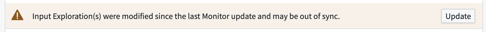
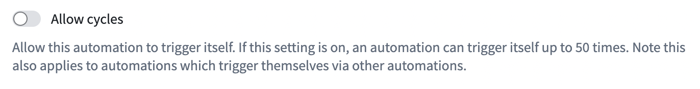

This page describes some common error categories that may be encountered when using Automate.
An automation may fail to evaluate due to problems with the underlying data. Automations are automatically retried, but some errors may require manual intervention. For example, if the object type being monitored is deleted, automations using that type will fail to evaluate.
Automations may use a reference to a saved exploration to define the input. This reference is not dynamic, but instead is stored according to the exploration as it exists when the automation is saved. If the exploration changes, the automation will continue to evaluate using the exploration's old state unless the automation is updated. In this case, a warning banner is displayed on the automation:

When manually executing automations with large object sets, you may encounter snapshot expiration errors. This occurs when the object set is too large to process before the underlying data snapshot expires.
To work around snapshot expiration errors with large backlogs, use a function-backed object set to process the backlog in manageable batches:
N objects that require processing.Learn more about manual execution and function-generated object sets.
Automation evaluation uses the permissions of the owner or recipients. This ensures that condition evaluation and any subsequent effects always reflect data that the user has access to at the time the automation is evaluated. If a user lacks permission to view object types, saved explorations, or the automation, they may see a permission-related error message instead of successful evaluation.
We strongly recommend storing automations and their related resources in shared Projects. Learn more about automation scope and log visibility.
To handle effect failures gracefully, you can configure a fallback effect for action, Logic, and Function effects. Fallback effects execute when the primary effect fails, allowing you to send notifications, log failures, or trigger alternative workflows.
How failures propagate depends on your effect execution configuration:
After a successful condition evaluation, action effects may fail to execute. This failure could happen for a variety of reasons, including the following:
If an action effect fails, the history timeline will indicate that one or more actions failed to execute for that event, along with relevant error details.
Note that when per-object execution is enabled, the object identifier surfaced in the error details as the cause of the error represents the object associated with the first request that caused the failure; there may be more hidden failures that are not propagated.
Consider a set of automations defined as follows:
Such a sequence of automations would cause an infinite loop, or cycle. A framework has been implemented to automatically detect and disable live automations that cause cycles.
For certain automations, cycle detection may be undesirable. Select Allow cycles in the condition settings to allow up to 50 cycles. This option is only available when live monitoring is enabled.

After a successful condition evaluation, notifications may fail to send. If this occurs, the history event will show a tag indicating that notifications were not sent to subscribers. Additional details will include an error identifier, the error message, and the object or objects that triggered the failure.